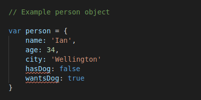
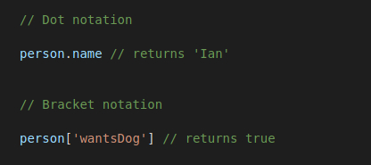
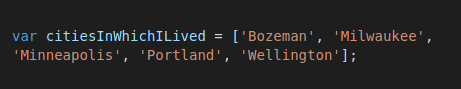
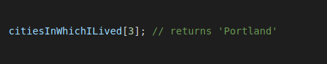
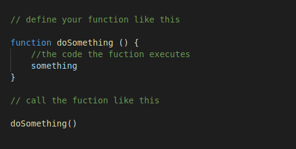

what we talk about when we talk about JavaScript
or how I learned to change the color of a spot
19 September 2020
The differences between HTML and CSS
The basic framework of a website consists of two main languages, HTML and CSS. You can think of HTML as the frame of a house. You have different elements of a house, such as windows, doors, rooms, an attic or basement, etc. Then CSS comes along and maps out the design of your house. Without a design and the instructions from the architect, the builders would have no idea how to put all the different parts of the house together. The CSS, or architect, will tell the builders how to arrange the rooms, what colour to paint them, how big they will be, and so on.
Control flow and loops
When a website performs some kind of action or interaction with the user beyond just displaying text and images for the user to view, it is likely that it is working through a control flow. Most people are familiar with a flow chart -- you go through a series of yes or no questions to reach a result. Well imagine control flow and loops as JavaScript telling a browser to follow a flow chart and to keep looping through that flow chart until the intended outcome is reached.
A simple example of this in everyday life is getting yourself a glass of water. Are you thirsty? Yes-- get yourself a glass of water. Turn on the water and start filling the glass. Is the glass full? No-- keep filling. Is the glass full? Yes-- drink. Are you still thirsty? Yes-- loop back through glass filling and drinking until the condition of thirsty is false.
What is the DOM?
The Document Object Model, or DOM, is a way for the bowser to represent your webpage as a tree consisting of objects. Your document (HTML) is full of elements (head, body, header, paragraph, etc.) and the DOM models these elements as objects that can be interacted with and manipulated.
The DOM represents the document as a tree of objects as the photo below illustrates.

We can use JavaScript to manipulate the DOM to, for example, change the colour of a dot. In your HTML document you may have this dot object styled by the CSS to be blue. Using JavaScript you can tell the DOM that if a user clicks the dot object it will turn green.
The difference between accessing data from arrays and objects.
Objects are used to represent a single thing that could have multiple properties with values. For example, the bit of code below shows an object containing information about myself.
I could access this information using dot notation or bracket notation.
Arrays are used to represent a list of multiple items. So unlike an object which is a single thing that could have multiple properties, an array is a list of things. Below is an array representing all the cities I have lived in.
The information inside arrays is indexed and uses 0 based indexing so the first item on the list would be 0, the second would be 1, and so on. This allows you to access the data based on the index value of the bit of data you want to access. So to access the 4th city on the list we would use the following:
What are JavaScript Functions?
Functions are the little work horses who get things done in JavaScript. They are essentially a block of reusable code that executes a certain task.
You define your function by giving it a name, give it some parameters inside the parentheses if you wish, and then between the curly brackets you put in a block of code that the function will execute. Functions work on the premise that you input some data into the function, it takes that data, does what you want with it, and then outputs a result. Your function could look something like this:
Functions are useful in several ways, including that they allow you to make up actions your code can do that are not already built into JavaScript. And because functions can be used as many times as you like they also prevent you from having to write the same block of code over and over. Instead you just call the function by typing, for example, doSomething() and it does the thing. They allow you to break down a complex program into smaller manageable functions.
back to top